Workshop Manual ➭ TRANSMISSION/TRANSAXLE ➭ MANUAL TRANSMISSION[P66M-D] ➭ TRANSMISSION REMOVAL/INSTALLATION [P66M-D]
TRANSMISSION REMOVAL/INSTALLATION [P66M-D]
id051100246711
{: #wp1059782}
-
Remove the battery cover. (See BATTERY REMOVAL/INSTALLATION [L8, LF].)
-
Disconnect the negative battery cable. (See BATTERY REMOVAL/INSTALLATION [L8, LF].)
-
Loosen the starter installation bolts only enough that the starter is loose, but not removed.
(See STARTER REMOVAL/INSTALLATION [L8, LF].)
-
Remove in the order indicated in the table.
-
Install in the reverse order of removal.
-
Perform the 'INSPECTION AFTER TRANSMISSION INSTALLATION', and verify that there is no malfunction.
(See INSPECTION AFTER TRANSMISSION INSTALLATION [P66M-D].)
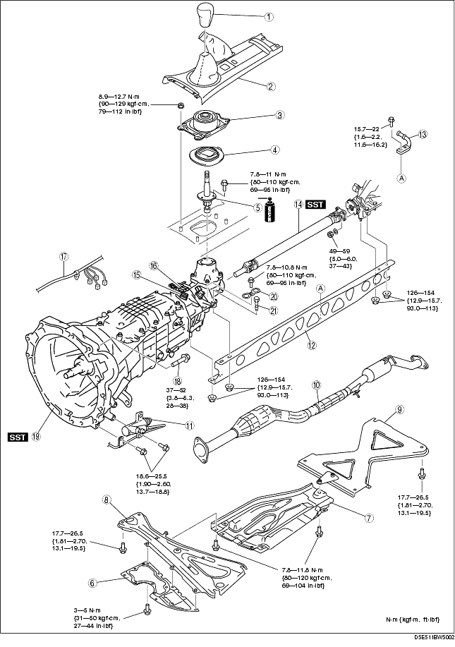
|
Shift lever knob {: #wp1059921} |
|
|---|---|
|
2 {: #wp1059959} |
Console {: #wp1059962} |
|
3 {: #wp1059966} |
Shift insulator component (outer) {: #wp1059969} |
|
4 {: #wp1060003} |
Shift insulator component (inner) {: #wp1060006} |
|
5 {: #wp1060020} |
Shift lever component {: #wp1060023} (See Shift Lever Component Installation Note.) {: #wp1060039} |
|
6 {: #wp1060051} |
Under guard {: #wp1060054} |
|
7 {: #wp1060070} |
Insulator {: #wp1060073} |
|
8 {: #wp1060089} |
Member bracket {: #wp1060092} |
|
9 {: #wp1060108} |
Tunnel member {: #wp1060111} |
|
10 {: #wp1060127} |
Catalytic converter, middle pipe {: #wp1060130} (See EXHAUST SYSTEM REMOVAL/INSTALLATION [L8, LF].) {: #wp1060148} |
|
11 {: #wp1060160} |
Clutch release cylinder {: #wp1060163} (See CLUTCH RELEASE CYLINDER REMOVAL/INSTALLATION.) {: #wp1060183} |
|
12 {: #wp1060195} |
Power plant frame {: #wp1060198} (See Power Plant Frame Removal Note.) {: #wp1060220} (See Power Plant Frame Installation Note.) {: #wp1060234} |
|
13 {: #wp1060246} |
Hanger bracket {: #wp1060249} |
|
14 {: #wp1060273} |
Propeller shaft {: #wp1060276} (See Propeller Shaft Removal Note.) {: #wp1060302} (See PROPELLER SHAFT REMOVAL/INSTALLATION.) {: #wp1060316} |
|
15 {: #wp1060328} |
Back-up light switch connector {: #wp1060331} |
|
16 {: #wp1060360} |
Neutral switch connector {: #wp1060363} |
|
17 {: #wp1060391} |
Wire {: #wp1060394} |
|
18 {: #wp1060422} |
Transmission installation bolt {: #wp1060425} |
|
19 {: #wp1060453} |
Transmission {: #wp1060456} (See Power Plant Frame Removal Note.) {: #wp1060486} (See Power Plant Frame Installation Note.) {: #wp1060500} |
|
20 {: #wp1060512} |
Stopper {: #wp1060515} |
|
21 {: #wp1060547} |
Bolt {: #wp1060550} |
Caution
• When removing/installing the transmission, be sure not to move the engine up and down more than necessary to prevent part interference with the engine.
Power Plant Frame Removal Note
- Support the transmission using a transmission jack.{: #wp1060650}
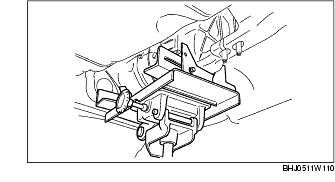
- Remove the power plant frame.
Propeller Shaft Removal Note
- Install the SST to the main shaft.{: #wp1060707}
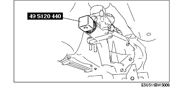
- Insert a slab of wood behind the rear differential, and remove the propeller shaft.{: #wp1060743}
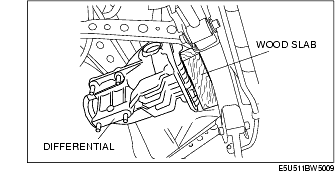
Transmission Removal Note
Warning
• Remove the transmission carefully, holding it steady. If the transmission falls it could be damaged or cause injury.
- Support the transmission securely using a transmission jack.{: #wp1060798}
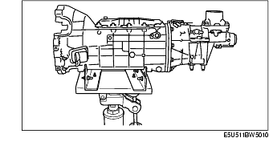
-
Remove the transmission installation bolts.
-
Remove the transmission.
Transmission Installation Note
-
Shift to any gear position.
-
Install the SST to the main shaft.{: #wp1060865}
Warning
• Install the transmission carefully, holding it steady. If the transmission falls it could be damaged or cause injury.
- Place the transmission on the transmission jack and raise it.{: #wp1060919}
*Note*{: #wp1060946}
• Slowly rotate the SST to engage the clutch with the main drive gear spline, and install the transmission.
-
Install the transmission.
-
Tighten the transmission installation bolts and nuts.{: #wp1060983}
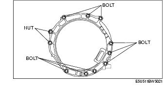
Tightening torque37-52 N·m {3.8-5.3 kgf·m, 28-38 ft·lbf}
Power Plant Frame Installation Note
- Support the transmission using a transmission jack.{: #wp1061053}
-
Install the power plant frame.
-
Temporarily tighten the nuts 1, 2, 3 in order shown in the figure.{: #wp1061090}
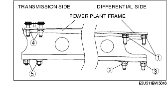
-
Tighten nut 2 until the power plant frame is seated in the rear differential.
-
Temporarily tighten the nuts 4, 5 in order shown in the figure.
-
Install the catalytic converter, middle pipe, and tunnel member.
-
Raise the front end of the power plant frame (transmission side) or the transmission with the transmission jack, and adjust dimension A to 26.7-34.7 mm {1.06-1.36 in} (lower surface of power plant frame-upper surface of the tunnel member) as shown in the figure.{: #wp1061147}
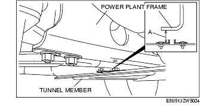
- Tighten the nuts on the rear differential side in the order shown in the figure.{: #wp1061195}
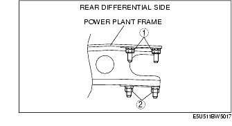
Tightening torque126.0-154.0 N·m{12.9-15.7 kgf·m, 93.0-113 ft·lbf}
- Tighten the nuts on the transmission side in the order shown in the figure.{: #wp1061269}
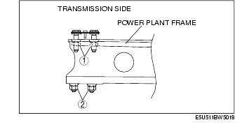
Tightening torque126.0-154.0 N·m{12.9-15.7 kgf·m, 93.0-113 ft·lbf}
- Verify that dimension A is within the specification with the transmission jack removed.
• If it is not within the specification, adjust dimension A again.
Standard dimension A26.7-34.7 mm {1.06-1.36 in}
Shift Lever Component Installation Note
*Note*{: #wp1061408}
• If the extension housing has been removed or the transmission has been disassembled and inspected, always add the specified type and amount of transmission oil.
- Add the specified type and amount of oil to the shift control case.{: #wp1061426}
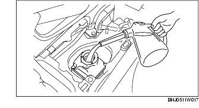
Shift control case specified oil gradeAPI Service GL-4Shift control case specified oil viscositySAE 75W-90Shift control case capacity (approx. quantity)80-230 ml {80-230 cc, 4.88-14.03 cu in}
- Apply grease to the areas of the shift lever component as shown in the figure.{: #wp1061536}
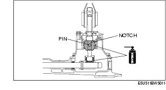
- Align the shift lever component notch with the shift control case pin and install the shift lever component.